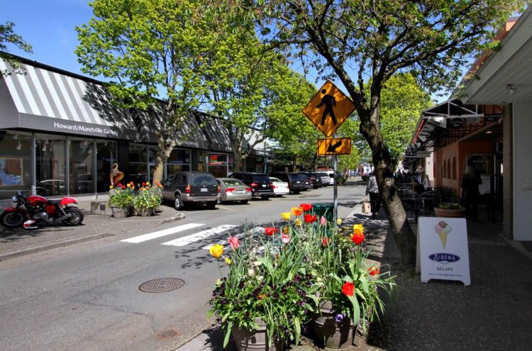

In this website I am going to talk about my favorite food places in Washington!!
I love food a lot and there are so many food places that I love that are big hits
in washington and some hole in the wall reasturaunts! A lot of these food places
are loved by so many locals and im sure that you would enjoy them too! I am a very
big lover of meat and carbs so a lot of these arent for the faint of heart! I do
have a few vegan reasturaunts I know are a hit!

This is a downtown in washington that has great food and cute shops as well!
This is me and one of my best friends! We are both foodies and she inspired me to make this page!